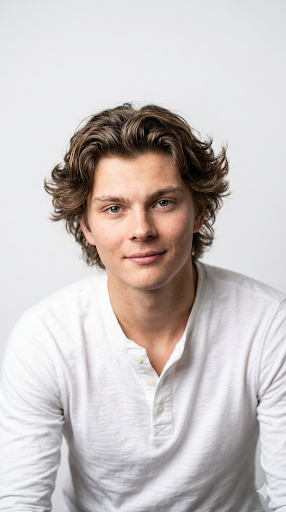

Hi, I'm Michael.
I moved to Canada at age 16 for an exchange program to experience a Western academic environment and explore a pathway to medical school. Today, I am a second-year biomedical engineering student at the University of Victoria. My academic and professional focus is the intersection of healthcare, robotics and artificial intelligence, with a specific interest in how innovative medical devices can transform clinical practice.
Outside of my academic work, music remains a foundational part of my life. I am a self-taught pianist and guitarist, a constant pursuit that balances technical discipline with creative expression. This appreciation for shared experiences naturally extends to my community, where I actively value meeting new people and exploring diverse perspectives. To maintain a well-rounded routine, I also seek out dynamic, hands-on challenges; I am an avid sailor, and whenever I have the opportunity, an enthusiastic cook.
Whether moving across the world at 16 or navigating unpredictable conditions on a sailboat, I have never been deterred by risk; I am driven by it. I bring this same appetite for challenge to my professional pursuits. Ultimately, my ambition is to step into the complex, high-stakes intersection of engineering and clinical medicine. By leveraging automation and artificial intelligence, I want to tackle the difficult problems others might avoid, developing innovative devices that tangibly improve patient outcomes.